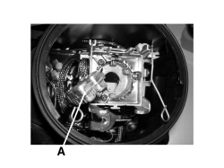
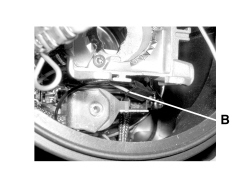

5540BP CHECK THE HIGH BEAM CONTROL COIL POWER SUPPLY
- Path
- Test > 55 ELECTRICAL EQUIPMENT > 5540 EXTERIOR LIGHTING > 5540B HEADLAMPS > 5540BP CHECK THE HIGH BEAM CONTROL COIL POWER SUPPLY
- Kind
- test / check procedure
- Applies to
- engines: 2.2 JTS, 3.2 JTS; all production periods; only with equipment: Gas discharge headlamps
- Interactive page
- https://sloeber94.github.io/elrnDB-aBrrSpdr/en/#/946001100
Applies to: engines: 2.2 JTS, 3.2 JTS; all production periods; only with equipment: Gas discharge headlamps
CHECK TO BE PERFORMED | RESOLUTION IF THE CHECK IS NOT OK | |
|---|---|---|
1 | Remove the headlamp. Remove the headlamp bulb Op. 5540B45 GAS DISCHARGE DIPPED/MAIN BEAM HEADLAMP BULB - R.R. Check that the 3-way connection (with two wires) supplying the headlamp high beam control coil is correctly inserted | Connect the electrical connection |
2 | Check the headlamp high beam function is operating correctly. The test can be considered over | Replace the left headlamp Op. 5540B81 LEFT GAS DISCHARGE LIGHT CLUSTER - R.R. or right headlamp Op. 5540B82 RIGHT GAS DISCHARGE LIGHT CLUSTER - R.R. (the faulty unit) and move on to Step 3 |
3 | Check the headlamp high beam function is operating correctly. | Refit the headlamp replaced previously and replace the control unit] |

A - Bulb connector

B - Coil power connection for high beam function control